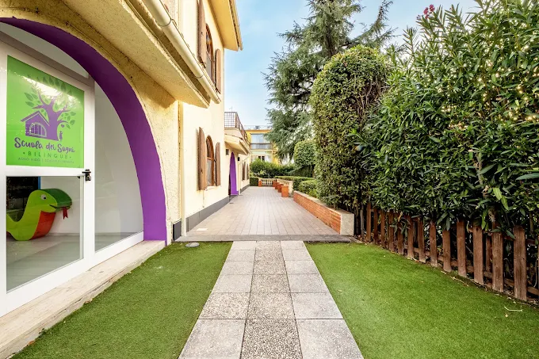
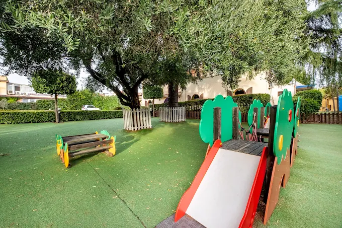
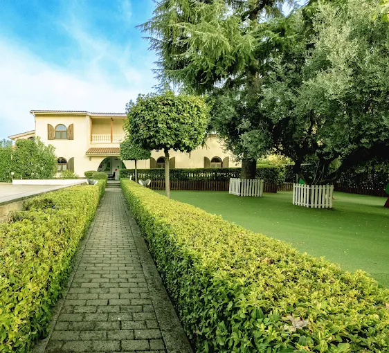
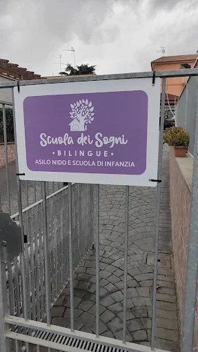
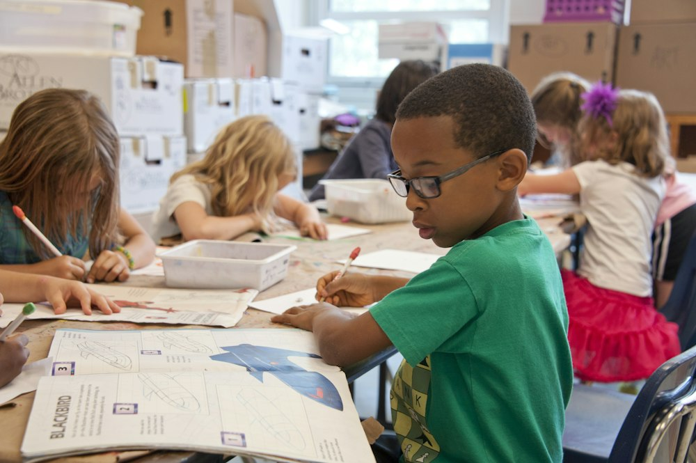

Progetto «Qua La Zampa» – Le foto
«La fedeltà di un cane ci insegna che l'amicizia può durare per sempre». Si è concluso con grandissimo entusiasmo il nostro laboratorio di approccio e rispetto verso gli amici a quattro zampe.
Uno spazio protetto, verde e stimolante dove crescere felici. Dalla prima infanzia fino ai 6 anni offriamo continuità pedagogica, bilinguismo naturale (Inglese & Spagnolo), cucina biologica interna e 1.500 mq di parco attrezzato.

Uno sguardo autentico agli ambienti dove ogni giorno i nostri piccoli crescono, giocano e imparano in totale sicurezza e libertà.



Ambienti sicuri, accoglienti e pensati per stimolare curiosità, autonomia e socializzazione dal primo anno fino all'ingresso nella scuola primaria.

La struttura che ospita il nostro Asilo Nido è composta da tre sezioni omogenee (lattanti, medi e grandi), tutte dotate di propri bagni riservati, aree di accoglienza dedicate, ampi spazi gioco interni morbidi e un grande giardino attrezzato in piena sicurezza con ambientamento dolce e personalizzato.
Il complesso che ospita la Scuola dell’Infanzia è suddiviso in tre sezioni omogenee (3, 4 e 5 anni) con rispettivi servizi igienici, una spaziosa sala mensa, una grande sala accoglienza, uno sportello d’ascolto rivolto alle famiglie e una palestra attrezzata a disposizione dei bambini per psicomotricità e danza.
La Scuola dei Sogni è un servizio educativo regolarmente autorizzato e accreditato rivolto alla prima infanzia, dove è presente una vera continuità educativa tra nido e scuola d’infanzia.
Il metodo utilizzato è un sistema integrato (0-6 anni) per garantire a tutte le bambine e i bambini pari opportunità di sviluppare al meglio le proprie potenzialità di relazione, autonomia, creatività e apprendimento spontaneo.
Incoraggiamo l'iniziativa attiva: «io sono capace di fare».
Immersione precoce nelle lingue attraverso gioco, canzoni e narrazione.
Ascolto empatico tra pari e con educatori specializzati.
Laboratori pratici ed esperienza diretta con la natura e i materiali.
Assolutamente no. Nei primi anni di vita il cervello infantile possiede una naturale plasticità fonetica unica. Attraverso l'immersione ludica con insegnanti madrelingua e il metodo narrativo Hocus & Lotus, i bambini apprendono i suoni dell'Inglese e dello Spagnolo con la stessa spontaneità e gioia con cui imparano la lingua madre, sviluppando flessibilità cognitiva e apertura mentale.
Una grande villa di 600 mq coperti immersa in un ampio giardino di 1.500 mq, due parcheggi interni privati dedicati unicamente alle famiglie e una cucina interna espressa.
La nostra scuola, che nasce come concreta risposta alla crescente richiesta del Municipio III di un servizio di eccellenza rivolto alla prima infanzia, si trova in Via della Bufalotta 850 a Roma, in un contesto tranquillo, riservato e immerso nel verde.
Le attività che contribuiscono alla crescita, alla sensibilità e alla formazione gioiosa dei bambini.
Insegnante madrelingua. Attività immersive quotidiane per far assimilare la lingua inglese spontaneamente attraverso canzoni, filastrocche e giochi.
Insegnante qualificata e formata con l'innovativa metodologia certificata Hocus & Lotus, basata sulla narrazione teatralizzata e sulle emozioni.
Per comprendere da vicino il ciclo delle stagioni, l’importanza del cibo biologico a km zero e il valore prezioso della cura condivisa e del lavoro di squadra.
Educazione al movimento e al linguaggio del corpo per esprimere liberamente contenuti emozionali interiori, fantasia, ritmo e immaginazione.
Per stimolare la motricità globale e la coordinazione spazio-temporale, oltre a importanti aspetti cognitivi, psicologici, emotivi e relazionali.
Per sviluppare empatia, ascolto e capacità di riflettere, acquisendo una migliore percezione di sé, dell’altro e dello spazio che ci circonda.
Una attività essenziale e giocosa che concorre allo sviluppo cognitivo, all'armonia motoria, all'ascolto attivo e alla consapevolezza emotiva.
Uno sport completo che stimola i principali schemi motori di base, potenziando la coordinazione, la socializzazione, lo spirito di gruppo e la strategia.
Non solo un’occasione di festa, ma un evento speciale di aggregazione, condivisione di spazi serali, storie e creatività che i bambini adorano.
La Scuola dei Sogni persegue finalità educative che stimolano continuamente nel bambino lo sviluppo di nuove esperienze attraverso specifiche azioni.
Tra pari e con gli adulti nei diversi contesti di esperienza quotidiana, basata sul rispetto, sull'empatia e sulla fiducia reciproca.
In tutte le sue forme ed espressioni: motore insostituibile di apprendimento, sperimentazione emotiva e socializzazione.
Per orientare e guidare la naturale curiosità del bambino in percorsi ordinati e organizzati di esplorazione sensoriale e ricerca attiva.
Accompagnare ogni bambino nella costruzione serena della propria identità: «Chi sono io? Quali sono le mie inclinazioni?»
Permettere al bambino di prendere coscienza e sicurezza delle proprie capacità, rendendolo orgoglioso del suo percorso di crescita.
«Io sono capace di...»: l’adulto fa da guida incoraggiando l’iniziativa allo sviluppo della competenza attraverso il fare, lo sperimentare e l’agire.
“Per insegnare bisogna emozionare. Molti però pensano ancora che se ti diverti non impari.”
I momenti più belli ed emozionanti vissuti insieme dai nostri piccoli esploratori e dalle loro famiglie.
«La fedeltà di un cane ci insegna che l'amicizia può durare per sempre». Si è concluso con grandissimo entusiasmo il nostro laboratorio di approccio e rispetto verso gli amici a quattro zampe.
È stata una settimana indimenticabile alla Scuola dei Sogni! Una giornata speciale a Zoomarine tra l'eleganza dei delfini e la scoperta della vita marina insieme a maestre e compagni.
Un momento magico di condivisione, sorrisi, poesie e piccoli capolavori realizzati con il cuore dai bambini. Grazie a tutte le mamme e alle famiglie che rendono unica la nostra comunità!
Oltre 74 post e 340 famiglie nella nostra community social: scopri foto, reel, storie quotidiane e lavoretti dei bambini!
Siamo sempre felici di accoglierti, presentarti il nostro progetto pedagogico e accompagnarti in una visita della villa e del parco.
Via della Bufalotta 850/852, 00138 Roma (Municipio III)
✓ Con 2 parcheggi interni privati riservati ai genitoriLunedì – Venerdì: 07:30 – 17:30
Sabato e Domenica: Chiuso
Compila il modulo sottostante: la nostra coordinatrice didattica ti risponderà entro 24 ore.
La tua richiesta è stata inviata con successo. La nostra segreteria didattica ti contatterà al più presto per concordare la visita o fornirti tutte le informazioni.
💬 Scrivici anche su WhatsApp per una conferma rapida